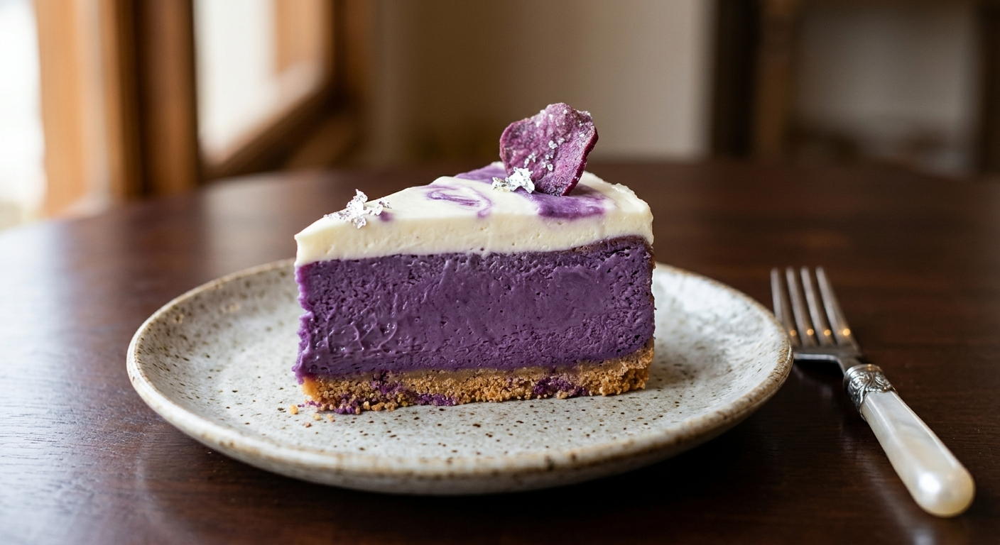
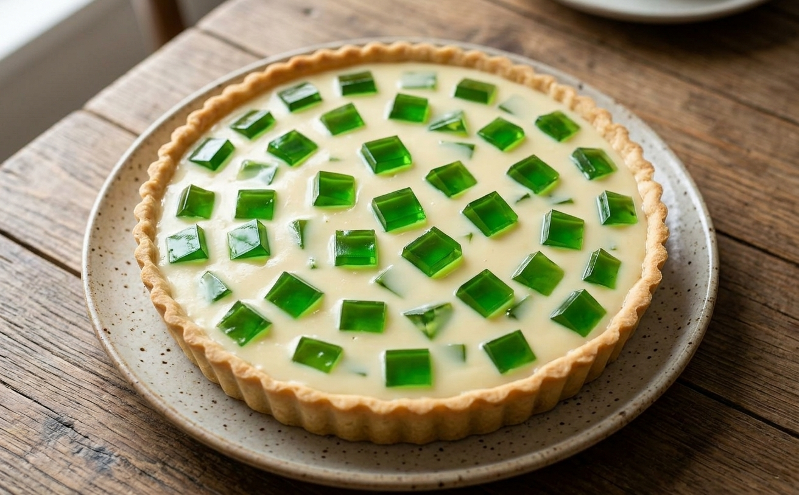
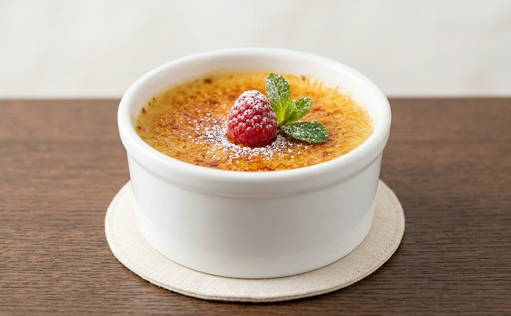

|
|
 |
Ube Cheesecake |
A velvety purple yam (ube) cheesecake on a buttery cracker crust, topped with a creamy white chocolate glaze, a crystalline purple yam chip, and delicate silver leaf. |
 |
Pandan-Infused Buko Tart |
A delightful coconut tart featuring a crisp, buttery crust filled with a smooth, velvety coconut custard, beautifully |
|  |
Classic Vanilla Bean Crème Brûlée |
A classically prepared, smooth vanilla bean custard with a flawless, crackled caramelized sugar top, crowned with a fresh, vibrant raspberry and a sprig of mint, all resting on a delicate linen coaster. |